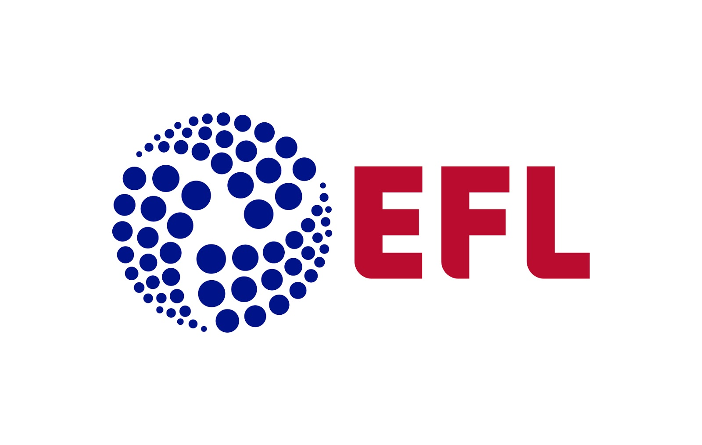

Система футбольных лиг
Премьер-лига
В 1992 году ведущие английские клубы вышли из состава Футбольной лиги, основав Премьер-лигу. Главной целью создания Премьер-лиги было увеличение доходов ведущих клубов. Премьер-лига сохранила связи с Футбольной лигой, и по итогам каждого сезона Премьер-лигу покидают три клуба, занявшие три последних места в турнирной таблице, а их заменяют три лучших клуба из Чемпионата Футбольной лиги. В Премьер-лиге выступают 20 клубов. Действующим чемпионом является «Манчестер Сити». Каждый клуб в Премьер-лиге владеет одной двадцатой частью акций Премьер-лиги, что предполагает равенство прав и ответственности участников чемпионата.
Футбольная лига
Являясь старейшей лигой в мире, футбольная лига на данный момент является лишь второй в иерархии английского футбола после отделения лучших клубов в 1992 году. В настоящий момент в футбольную лигу входит 72 клуба, которые соревнуются в трёх дивизионах: чемпионате футбольной лиги, первой лиге и второй лиге.
Резервные лиги
Высший дивизион для резервных команд футбольных клубов был основан в 1999 году под названием «Резервная премьер-лига». Он разделён на Северную и Южную резервную премьер-лиги, в каждой из которых выступает по 10 команд.
Молодёжные лиги
У большинства клубов есть свои молодёжные команды. Высшим дивизионом для молодёжных команд является Академическая премьер-лига, основанная в 1997 году, в которой выступают молодёжные команды всех клубов Премьер-лиги и некоторых клубов Футбольной лиги, имеющих футбольную академию. На данный момент в лигу входит 40 клубов, которые разделены на четыре группы по 10 команд в каждой. Победители каждой группы разыгрывают чемпионский титул в матчах плей-офф в конце сезона.
Вторым уровнем молодёжных лиг является Молодёжный альянс Футбольной лиги, также основанный в 1997 году, в которой участвуют молодёжные команды клубов Футбольной лиги. В настоящее время в Молодёжный альянс входят 58 клубов, которые выступают в четырёх региональных лигах. В рамках этого турнира также проводится Кубок Молодёжного альянса.
Национальным кубковым турниром для молодёжных команд до 18 лет является Молодёжный кубок Англии, который проводится Футбольной ассоциацией. В каждом сезоне в розыгрыше Молодёжного кубка принимают участие более 400 команд.